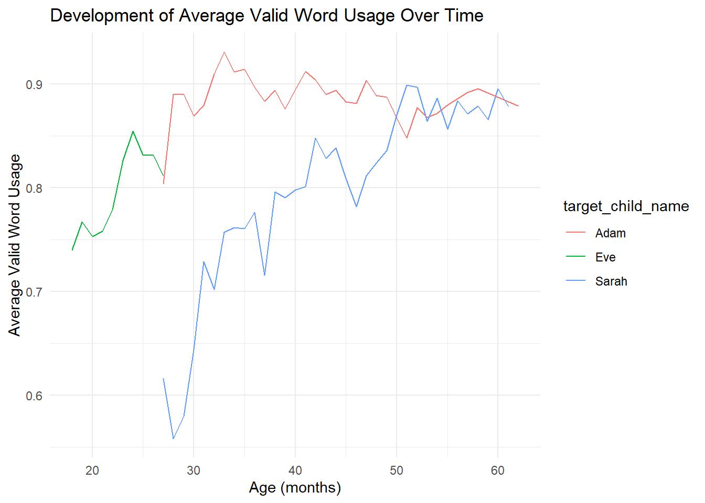
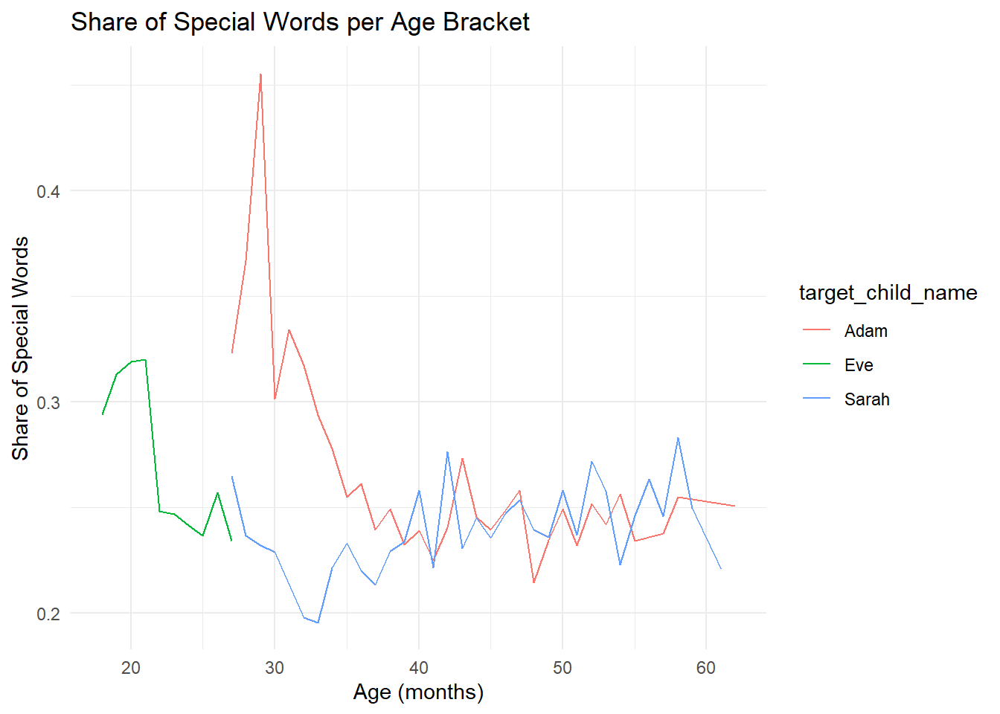
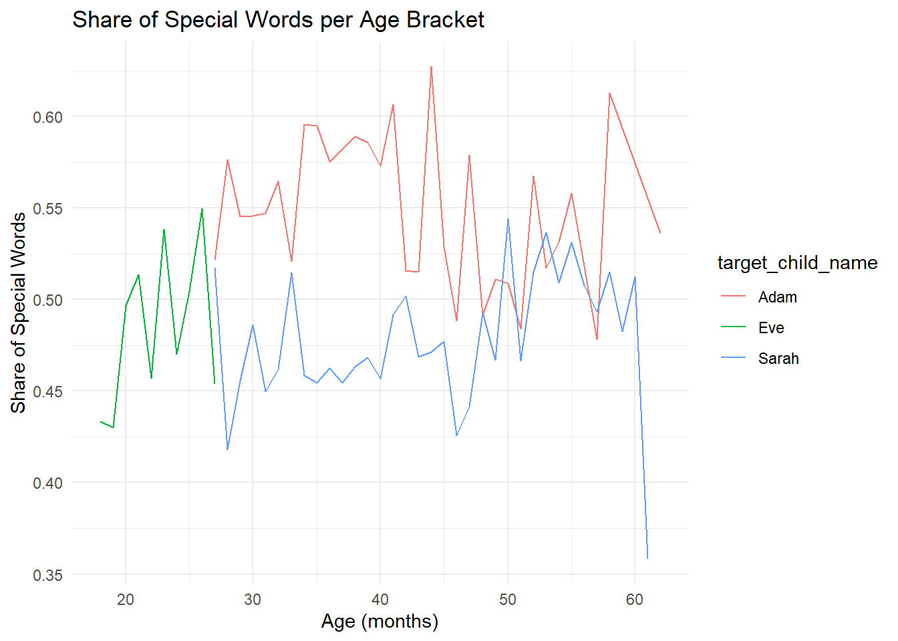

In this course, you will explore the childes data set in the data science assignments. It is important to get at least a little acquainted with the data set before you pick a research question, as there may not be a way to answer your research question using childes.
In this example, we will go over one possible analysis that can be done within the data set - comparison of three children and their language development. We will also cover useful codes and some tips and tricks on how to work with this data set. This data exploration does not answer a specific question, but rather provides some insight into this data set and ways it can be used.
#First, download all the important librarieslibrary(tidyverse)
Warning: package 'tidyverse' was built under R version 4.3.3
Warning: package 'ggplot2' was built under R version 4.3.3
Warning: package 'dplyr' was built under R version 4.3.3
── Attaching core tidyverse packages ──────────────────────── tidyverse 2.0.0 ──
✔ dplyr 1.1.4 ✔ readr 2.1.4
✔ forcats 1.0.0 ✔ stringr 1.5.1
✔ ggplot2 3.5.1 ✔ tibble 3.2.1
✔ lubridate 1.9.3 ✔ tidyr 1.3.0
✔ purrr 1.0.2
── Conflicts ────────────────────────────────────────── tidyverse_conflicts() ──
✖ dplyr::filter() masks stats::filter()
✖ dplyr::lag() masks stats::lag()
ℹ Use the conflicted package (<http://conflicted.r-lib.org/>) to force all conflicts to become errors
library(tidytext)
Warning: package 'tidytext' was built under R version 4.3.3
library(childesr)
Warning: package 'childesr' was built under R version 4.3.3
library(qdapDictionaries)#Let's take a look at all the available corpora in the data set.corpora <-get_corpora()
Using current database version: '2021.1'.
View(corpora)
We are going to work with tokens and utterances a lot, so first, a little explanation on what they actually are. Utterances are data elements from a recorded piece of conversation (such as “I had good dinner”). Tokens are specific pieces of utterances (“I”, “had”, “good”, “dinner”). Utterances are usually more useful when we look into the development of a child as a whole (syntax, semantics, context of the utterance), whereas with tokens you can look into the development of a child’s vocabulary (child’s vocabulary complexity and its development over time.)
When picking a child/children for your research question, it is very important to make sure you have enough data (utterances and tokens) to work with. In a study done by MacWhinney, B., & Snow, C. (1990) you have a detailed overview of all the researchers who have added to the childes data set. There are some which follow a single child (Snow), some that look into the short-term speech of multiple children (Higginson), and some that follow the mothers and children as well (Howe).
In this example, we will work with Brown’s addition to the data set (Brown’s corpora, specifically tokens) - data acquired from three children Adam, Eve and Sarah, collected by Roger Brown and his students. Adam was studied from 2;3 to 4;10; Eve from 1;6 to 2;3; and Sarah from 2;3 to 5;1.
#Get the and tokens from this corpus.tokens <-get_tokens(token ="*", collection ="Eng-NA", corpus ="Brown", role ="target_child")
Using current database version: '2021.1'.
Getting data from 3 children in 1 corpus ...
Now we need to decide how to compare the development of these three children’s language. We can introduce a variable for whether the each word is present in an English dictionary. This variable will be a logical vector, with TRUE and FALSE as possible values. The computer treats TRUE values as 1 and FALSE values as 0, so you can use mathematical operations such as averages on logical data. Then the average of the variable over a certain time period can be interpreted as the share of words that are present in an English dictionary: average values closer to zero would mean the child still has a lot of mumbling/incorrect pronunciation or misspoken words in their vocabulary, whereas a child with a score nearing 1 has a very developed vocabulary. This way, we can assign a value to every token, and then average it per certain time period. Afterwards, we can compare this value progression for all three children. This comparison does not look into syntax of the sentence, meaning that even a sentence “banana mango apples man” would be evaluated as entirely correst, when in reality this sentence is nonsensical. Therefore our way of looking into the language development is one-dimensional but there will always be some sort of limitation to conducting research.
In order to find out which words exist in an English dictionary, we need to choose a dictionary. The qdapDictionaries package contains the GradyAugmented object, which is a character vector containing over 120,000 English words.
# Let's check the total number of words in this dataset.length(GradyAugmented)
[1] 122806
It is suggested by multiple sources that we need approximately 3000 words to be able to communicate our point in English without any problems (VocabularyFirst, 2019; Yang, 2016). This data set has 40 times that amount, so we can deem it appropriate for our purposes. Even though it’s not an exhaustive list of all English words, the chances that a child said a word that is correct and is not on the list above is close to zero.
Now we need to compare the data sets of children’s tokens with the valid words in our English dictionary. For this we need to do some data mutating.
# Create a new column 'is_valid' in tokensvalid_tokens <- tokens %>%mutate(is_valid = gloss %in% GradyAugmented)# View the first few rows to verifyhead(tokens)
# A tibble: 6 × 28
id gloss language token_order prefix part_of_speech stem actual_phonology
<int> <chr> <chr> <int> <chr> <chr> <chr> <chr>
1 7.56e6 yeah eng 1 "" co yeah ""
2 7.56e6 choo… eng 1 "" on choo ""
3 7.56e6 train eng 2 "" n train ""
4 7.56e6 there eng 1 "" adv there ""
5 7.56e6 water eng 2 "" n water ""
6 7.56e6 water eng 1 "" n water ""
# ℹ 20 more variables: model_phonology <chr>, suffix <chr>,
# num_morphemes <int>, english <chr>, clitic <chr>, utterance_type <chr>,
# corpus_name <chr>, speaker_code <chr>, speaker_name <chr>,
# speaker_role <chr>, target_child_name <chr>, target_child_age <dbl>,
# target_child_sex <chr>, collection_name <chr>, collection_id <int>,
# corpus_id <int>, speaker_id <int>, target_child_id <int>,
# transcript_id <int>, utterance_id <int>
Since these children are not studied from the time when they first start speaking and are therefore more likely to stutter or create their own words to fill in gaps in vocabulary, the number will be quite high and approaching 1. However, there will still be some slips, such as in row 2 of adam_tokens, where we can see that Adam used the word choo-choo, which is not grammatically correct, probably to adress a train.
Looking at these “slips” may show us how developed their language is. In reality, creating their own words and bridging gaps in their vocabulary is just a natural step in their language development, as it is experimentation with meaning, words structures and sounds (Michigan State University Extension, 2023, Social Sci LibreTexts, 2023). However, for us it shows how “far” a child is in their language development journey.
Before we look into comparison, let’s create a graph where we can see the development over time.
`summarise()` has grouped output by 'target_child_name'. You can override using
the `.groups` argument.
valid_tokens |>ggplot(aes(x = age, y = valid_share, color = target_child_name)) +geom_line() +labs(title ="Development of Average Valid Word Usage Over Time",x ="Age (months)",y ="Average Valid Word Usage") +theme_minimal()

After looking at the data we can see that initially, there is an increase of average valid word usage. However, there does not seem to be a stable trend, except for Eve, where there is a stable increase for period of 5 months. Her speech was recorded for shorter period of time than Adam and Sarah, so it’s not an entirely fair comparison with the other two. When we compare only Adam and Sarah, we can see that Sarah’s speech has stable results after the 40th month of her life of between 80-90% average valid words in speech, while Adam performs somewhat higher, having an average of between 85-95% after the 30th month of his life.
This way of analyzing tokens may be more suitable for children that are just learning how to speak, as all three data sets suggest that there is a certain development period of life when there is a rise of average valid use of words, and then the data becomes a bit messier, and the trends are harder to find.
Another way we can analyse and compare their vocabulary development is to look into the uniqueness of words the children use. For this we will track “valid” words from their utterances, but compare it against the 500 most common words in the English language to see how many words are NOT from this list (while still being valid words). We can do this as a count of less common words per month. Bear in mind that here we have to make sure we don’t count the same word twice in a month!
First, let’s create a vector with the most common words according to english4today.com, as there is no data set directly in RStudio.
Useful tip: you should not use ChatGPT for writing your code for you, but when it comes to formatting words/numbers into data sets and vectors, it can be quite helpful!
Now let’s count the number of special words per month for each child. We should also normalize this against all words said that month to have a resulting percentage.
`summarise()` has grouped output by 'target_child_name'. You can override using
the `.groups` argument.
# Create the plotspecial_tokens |>ggplot(aes(x = age, y = special_share, color = target_child_name)) +geom_line() +labs(title ="Share of Special Words per Age Bracket",x ="Age (months)",y ="Share of Special Words") +theme_minimal()

As an alternative measure, we can consider the share of unique special words out of the total number of unique words. So e.g. if a child says 1000 unique tokens in a month, out of which 200 are valid but not common words, the share of unique special words would be 200/1000=20%. We can calculate this alternative metric by adding one line of code that keeps only unique combinations of child name, age, token, and special word indicator.
`summarise()` has grouped output by 'target_child_name'. You can override using
the `.groups` argument.
# Create the plotunique_special_tokens |>ggplot(aes(x = age, y = special_share, color = target_child_name)) +geom_line() +labs(title ="Share of Special Words per Age Bracket",x ="Age (months)",y ="Share of Special Words") +theme_minimal()

As we can see in the graph, there are too many special words, so we will enlarge the common_words data set to around 1500, which is 1000 words less than the typical vocabulary size of a 5 year old (according to Linguisystems Milestones Guide it should be between 2200-2500). Since these children are looked at from early age until approximately 5 years, I have decided to compare their vocabulary to the one of a 5 year old child. However, as each child is raised in a different environment, there are different words that are considered common around the house, which definitely has the impact on the uniqness of words.
This data set includes common_words, as well as an additional circa 1000 common words. Since I could not find the data that would include he most commonly spoken 2500 words (average 5 year old vocabulary size), I had to make smaller sized data set. Sometimes the investigation of a research question can be halted because of such reasons, so it’s very important to keep in mind the resources and data sets available on the internet. In this case, I included a data set made from two different websites, so there might be an overlap of words, which is why I had to remove duplicates. Furthermore, I put it in alphabetical order for my own convenience.
After looking at the graphs, we can see that all three children use language that is developed and also contains more unique words. However, that does not tell us directly whether their other language skills such as syntax are also on par with where they should be with their language development.
When it comes to their vocabulary specifically, we can see the use of a more developed language, compared to an average 5 year old, or even a little more advanced than that. That is true for all of them even from a younger age, where they use less common words. This may be explainable by their environment - if the child’s father is a doctor, they may come in contact with more advanced words from the medical field, simply due to existing in the same household. What can also be the case is that they do know some more advanced words, but lack in basics.
Once again, we can’t really fully compare Eve with Adam and Sarah, as she does not have data coverage over extended periods of time. However, when we compare the special words Adam has, we can notice that Eve has the higher unique words usage, which suggests her vocabulary is more advanced. This finding is interesting, as Adam has a higher average of valid words used over time compared with Eve. Sarah’s data are rather inconclusive, as she shows very high usage of unique words at first, and then it drops below 60%. Overall, these data don’t show as much of a trend as we’d hope for an investigation. It’s key to play around with data and find good tools to reach more definite conclusion.
To conclude, we looked into three children’s tokens, and did two analyses - one that looked into their average usage of valid words over time using an English vocabulary, and a second one that looked into special words usage per month. We can conclude that Eve does not have enough data to be compared with Sarah and Adam, but all of them have enough data to be analysed independently. Furthermore, Adam shows more advancements compared to Sarah when it comes to average valid word usage, but Eve has higher unique word usage.
Childes-db. (2019). Childes-db: A flexible and reproducible interface to the child language data exchange system. Journal of Child Language, 51, 1928–1941. https://doi.org/10.1017/s0305000900013866